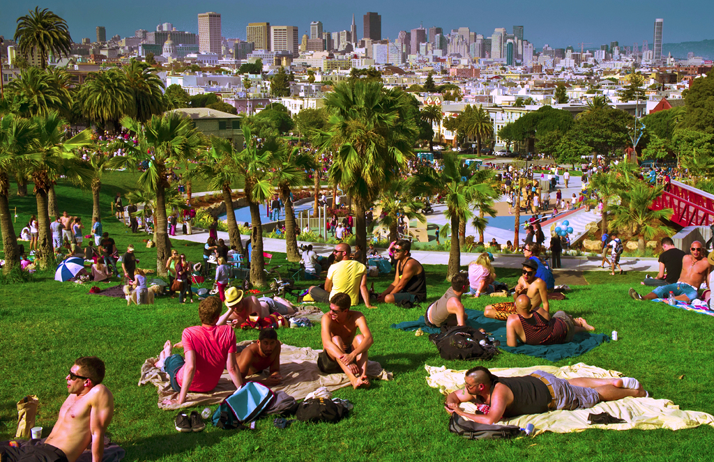

The City
Mission Dolores park is a popular gathering spot in San Francisco, known for its vibrant atmosphere and stunning views of the city skyline. It's a favorite spot for locals and tourists alike to relax, have picnics, and enjoy outdoor activities. Hippie Hill, located within Golden Gate Park, is another iconic location associated with the hippie movement. It's known for its laid-back vibe, live music, and communal gatherings, making it a symbol of the counterculture era that defined San Francisco in the 1960s.
Both Dolores Park and Hippie Hill continue to be popular destinations that celebrate the spirit of freedom, creativity, and community that the hippie movement embodied and the Bay Area represents today.
